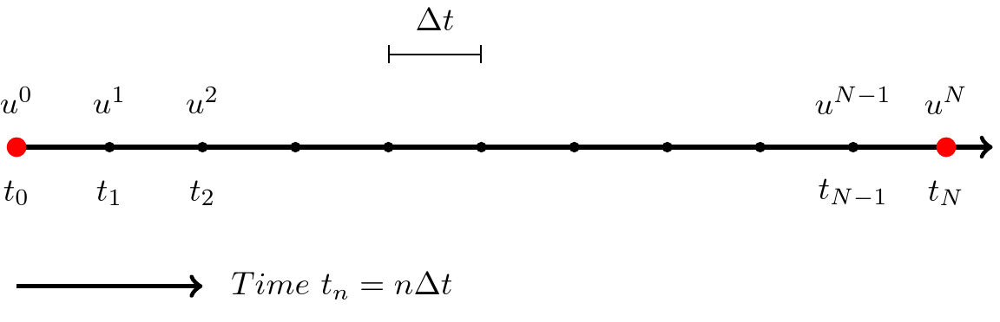

Lecture 5 - Finite difference methods for the wave equation#
The Wave equation#
The wave equation is a partial differential equation (PDE):
We will consider the time and space domains: \(t\in[0, T]\), \(x \in [0, L]\).
The wave equation is an initial-boundary value problem. As such it can be solved using a mixture of marching methods in time and a differentiation matrix in space.
The solutions are waves that can be written as \(u(x+ct)\) and \(u(x-ct)\).
The two derivatives in time require two initial conditions, both specified at \(t=0\)
for some functions \(I(x)\) and \(V(x)\). We will normally use \(V(x)=0\) for simplicity.
Dirichlet (Fixed end)#
The wave will be reflected, but \(u\) will change sign. A nonzero Dirichlet condition is also possible, but will not be considered here.
Neumann (Loose end)#
The wave will be reflected without change in sign. A nonzero Neumann condition is also possible, but will not be considered here.
Open boundary (No end)#
The wave will simply pass undisturbed and unreflected through an open boundary.
The following example illustrates nicely. Turn on Pulse, and turn off damping. Specify one of the three boundary conditions and press the green pulse button.
Discretization#
The simplest possible discretization is uniform in time and space
Hence the computational mesh is a grid like shown below
A mesh function is defined as
and the mesh function has one value at each node in the mesh. For simplicity in later algorithms we will use the vectors
which is the solution vector at time \(t_n\).
A second order accurate discretization of the wave equation is
This stencil makes use of 5 neighboring points
The recursive solution algorithm is basically to solve the discrete PDE for all \(u^{n+1}_j\)
Initialize \(u^0\) and \(u^1\)
for n in range(1, \(N_t-1\)):
for j in range(1, N-1):
\(u^{n+1}_j = 2u^n_j - u^{n-1}_j + \left(\frac{c \Delta t}{ \Delta x}\right)^2 (u^{n}_{j+1}-2u^n_{j} + u^n_{j-1})\)
and apply the chosen boundary conditions.
Since the solution algorithm is recursive we only need to store the solution at three time steps,
Each vector requires storage of \(N+1\) number, so the total storage requirement for the method is merely \(3(N+1)\).
The unknown vector is \(u^{n+1}\), whereas \(u^n\) and \(u^{n-1}\) are always known.
The number
is the Courant number. The value of the Courant number is very important for the stability of the numerical scheme.
We may now use the second differentiation matrix to simplify the notation. We use
which does not include \(\Delta x\). We may now simply write the recursive formula as
For \(n=1, 2, \ldots, N_t-1\) compute
Note how the \(j\)’th row of the matrix vector product \(D^{(2)} u^{n}\) is given as
except for the first and last rows where \(j=0\) and \(j=N\), respectively. However, these rows will be used for boundary conditions and will as such always require modification. For all inner points the above recursive equation is ok.
Note how the algorithm now basically can be written with merely one single for loop
Initialize \(u^0, u^1\)
For \(n = 1, 2, \ldots N_t-1\) compute
Hence the use of matrix and vector notation simplifies the algorithm and as such also the implementation. However, in addition to the two simple steps above there is also boundary conditions. Boundary conditions are usually the most tricky part of numerical PDE solvers.
The complete algorithm will also need to update vectors as we move the solution forward:
Initialize \(u^0, u^1\)
For \(n = 1, 2, \ldots N_t-1\) compute
We swap \(u^{n-1} \leftarrow u^n\) and \(u^{n} \leftarrow u^{n+1}\) to get ready for the next time step.
Remaining complications#
How to fix initial conditions in time?
How to set boundary conditions in space?
Implementation
At the end of the notebook there is implemented a class Wave1D that will be used to solve the wave equation. The solver has implemented only the simplest Dirichlet boundary condition and it is an assignment to implement the other possibilities. The reader is advised to study the details of the class.
For the implementation we define three vectors in Python to hold the solutions at \(u^{n+1}, u^n\) and \(u^{n-1}\)
N = 100 # The spatial discretization
unp1 = np.zeros(N+1)
un = np.zeros(N+1)
unm1 = np.zeros(N+1)
Initial conditions#
Initial conditions will need to fix un and unm1. There are basically three options. If a time dependent function is given for initial conditions, then this function may be used for not only one, but two time steps, at
We will in the implementation then set unm1=\(u(x, 0)\) and un=\(u(x, \Delta t)\) simply by evaluation. Note that this approach leads to only one wave traveling in one direction and is not compatible with \(u_t(x, t)=0\).
Another alternative can be used for an initial condition given as \(u(x, 0)=I(x)\) and \(u_t(x, 0)=0\). Her you can specify first \(u(x_j, 0) = I(x_j)\) for all \(j=0, 1, \ldots, N\) and then \(u(x_j, \Delta t) = 0.5(I(x+c \Delta t) + I(x-c \Delta t))\). This will lead to a solution with two traveling waves.
The final alternative is to use the actual condition \(u_t=V(x)\) and the PDE, which also works when \(V(x)\) is nonzero. In order to implement this with a central scheme and second order accuracy, we use
and then we use this equation to solve for the “unknown” \(u^{-1}\) such that
This can further be used in the wave PDE at initial time step \(n=0\), which is
Insert for \(u^{-1}\) and obtain a modified equation for \(u^1\)
So with two initial conditions we fix unm1\(=u^0=u(x, 0)\) and un\(=u^1=u(x, \Delta t)\) and solve first for unp1\(=u^2=u(x, 2\Delta t)\).
The implementation in Wave1D simply evaluates a Sympy function for the initial condition. See the initial part of Wave1D.__call__.
Boundary conditions#
There are several options for the boundary conditions to the spatial domain.
Dirichlet
Neumann
Open boundaries
Periodic boundaries
We have seen the first three initially in these notes. We will now look at the implementation details.
We will implement the entire solver using
for n in range(2, Nt+1):
unp1[:] = 2*un - unm1 + C**2 * (D @ un)
apply_bcs(bc)
unm1[:] = un
un[:] = unp1
where C is the Courant number, D is the \(D^{(2)}\) matrix (without scaling) and apply_bcs is a function used to fix the boundary values after solving.
Note that D @ un represents the matrix vector product
and the result is multiplied by the scalar value \(C^2\).
Dirichlet#
Dirichlet boundary conditions specifies fixed values at the edges of the domain. If both are zero, then we fix
which is implemented in the function Wave1D.apply_bcs at each time step as
unp1[0] = 0
unp1[-1] = 0
Note that since we specify \(u^{n+1}_0\) and \(u^{n+1}_N\) after solving for all the internal nodes, it does not matter what is in the first and last row of \(D^{(2)}\). Whatever is computed for \(j=0\) and \(j=N\) with
will be overwritten by specifying \(u^{n+1}_0 = u^{n+1}_{N} = 0\).
For Dirichlet the algorithm is
Initialize \(u^0, u^1\)
For \(n = 1, 2, \ldots N_t-1\) compute
If the PDE is only used for initial points \(j=1, 2, \ldots, N-1\), then it is not necessary to set \(u^{n+1}_0 = u^{n+1}_N = 0\) every time step. It is sufficient to fix them at the start of the simulation.
Note
There is also another way to implement the Dirichlet boundary conditions, by using the differentiation matrix \(D^{(2)}\). If the first and last rows of \(D^{(2)}\) are set to zeroes, then \(u^{n+1}_0\) and \(u^{n+1}_N\) will never be updated and remains the same value as set for \(u^0_0\) and \(u^0_N\). See the Neumann boundary conditions about modifying the differentiation matrix.
Neumann#
Neumann is a bit more tricky. For simplicity we assume homogeneous conditions, such that
If we now apply central differences of second order, then the stencil is
for any time step \(n = 0, 1, \ldots, N\). At the left boundary \(j=0\) and we get
Here \(u^{n}_{-1}\) is not known, or it is outside the mesh. However, we get from the above equation that
and this can be used together with the PDE for the wave equation
This equation at node 0 is
where we can insert for \(u^{n}_{-1} = u^{n}_{1}\) and get
Similarly, at the last node \(j=N\) and
In order to get this into a vector notation we can modify the first and last rows of the matrix \(D^{(2)}\):
Now the following equation will be valid for all nodes, and not just the internal:
There is in other words no need to do anything for these Neumann conditions in the Wave1D.apply_bcs method. Modifying the matrix is all that it takes.
Open boundaries#
At the left boundary we have the open condition
A simple solution here is to use first order accurate forward differences
This equation can be solved for \(u^{n+1}_0\), which is exactly what we need at the boundary. Hence we directly have an equation to use
Similarly at the other boundary we have
and the same first order approach gives us
Unfortunately the accuracy is only first order. Like for Neumann conditions we can also here use the wave PDE in order to get better accuracy. Using central second order stencils we get for \(j=0\)
This equation can be solved for the unknown \(u^n_{-1}\)
which can be used in the PDE for node \(j=0\)
Some algebra leads to
A similar approach for \(j=N\) leads to
These two equations should be implemented in the Wave1D.apply_bcs method.
Periodic boundaries#
If a domain is periodic, this simply means that a solution is repeating itself indefinitely. For example, a sine wave is periodic. The wave \(\sin(2 x \pi)\) is repeating itself every \(x=1, 2, 3, \ldots\) as shown below.

Periodic boundary conditions simply mean that \(u(0, t) = u(L, t)\). This means the two red dots above are the same and as such
However, there is more. Because of the above, this means that \(u^n_{-1}\), which earlier has been outside of the domain, now is simply \(u^n_{N-1}\). The mesh wraps around. And as a consequence there is nothing out of the ordinary with \(j=0\). We can use the central PDE stencil wrapped around. For \(j=0\) we get
So the matrix \(D^{(2)}\) can be modified as
and we can use the vector approach for \(j=0, 1, \ldots, N-1\) and then in addition we can set \(u^{n+1}_N = u^{n+1}_0\).
Note that the last row in the matrix \(D^{(2)}_p\) is not used, because we solve the PDE for \(j=0, 1, \ldots, N-1\).
The condition \(u^{n+1}_N = u^{n+1}_0\) should be set in Wave1D.apply_bcs.
Wave equation solver#
A basic solver implemented with Dirichlet boundary conditions is given below. The solver should be modified with Neumann, open and periodic boundary conditions.
import numpy as np
import sympy as sp
from scipy import sparse
import matplotlib.pyplot as plt
x, t, c, L = sp.symbols('x,t,c,L')
class Wave1D:
"""Class for solving the wave equation
Parameters
----------
N : int
Number of uniform spatial intervals
L0 : number
The extent of the domain, which is [0, L]
c0 : number, optional
The wavespeed
cfl : number, optional
CFL number
u0 : Sympy function of x, t, c and L
Used for specifying initial condition
"""
def __init__(self, N, L0=1, c0=1, cfl=1, u0=sp.exp(-200*(x-L/2+c*t)**2)):
self.N = N
self.L = L0
self.c = c0
self.cfl = cfl
self.x = np.linspace(0, L0, N+1)
self.dx = L0 / N
self.u0 = u0
self.unp1 = np.zeros(N+1)
self.un = np.zeros(N+1)
self.unm1 = np.zeros(N+1)
def D2(self, bc):
"""Return second order differentiation matrix
Paramters
---------
bc : int
Boundary condition
Note
----
The returned matrix is not divided by dx**2
"""
D = sparse.diags([1, -2, 1], [-1, 0, 1], (self.N+1, self.N+1), 'lil')
if bc == 1: # Neumann condition is baked into stencil
raise NotImplementedError
elif bc == 3: # periodic (Note u[0] = u[-1])
raise NotImplementedError
return D
def apply_bcs(self, bc, u=None):
"""Apply boundary conditions to solution vector
Parameters
----------
bc : int
Boundary condition in space
- 0 Dirichlet
- 1 Neumann
- 2 Open boundary
- 3 periodic
u : array, optional
The solution array to fix at boundaries
If not provided, use self.unp1
"""
u = u if u is not None else self.unp1
if bc == 0: # Dirichlet condition
u[0] = 0
u[-1] = 0
elif bc == 1: # Neumann condition
pass
elif bc == 2: # Open boundary
raise NotImplementedError
elif bc == 3: # Periodic
raise NotImplementedError
else:
raise RuntimeError(f"Wrong bc = {bc}")
@property
def dt(self):
return self.cfl*self.dx/self.c
def __call__(self, Nt, cfl=None, bc=0, ic=0, save_step=100):
"""Solve wave equation
Parameters
----------
Nt : int
Number of time steps
cfl : number
Courant number
bc : int, optional
Boundary condition in space
- 0 Dirichlet
- 1 Neumann
- 2 Open boundary
- 3 periodic
ic : int, optional
Initial conditions
- 0 Specify un = u(x, t=0) and unm1 = u(x, t=-dt)
- 1 Specify unm1 = u(x, t=0) and u_t(x, t=0) = 0 using ghost node and PDE for un=u(x, dt)
- 2 Specify unm1 = u(x, t=0) and u_t(x, t=0) = 0 using 0.5*(I(x+c*dt)+I(x-c*dt)) for un=u(x, dt)
save_step : int, optional
Save solution every save_step time step
Returns
-------
Dictionary with key, values as timestep, array of solution
The number of items in the dictionary is Nt/save_step, and
each value is an array of length N+1
"""
D = self.D2(bc)
self.cfl = C = self.cfl if cfl is None else cfl
dt = self.dt
# Initialize
u0 = sp.lambdify(x, self.u0.subs({L: self.L, c: self.c, t: 0}))
self.unm1[:] = u0(self.x) # unm1 = u(x, 0)
plotdata = {0: self.unm1.copy()}
if ic == 0: # use sympy function for un = u(x, dt)
u0 = sp.lambdify(x, self.u0.subs({L: self.L, c: self.c, t: dt}))
self.un[:] = u0(self.x)
elif: # use u_t = 0 for un = u(x, dt)
self.un[:] = self.unm1 + 0.5*C**2* (D @ self.unm1)
self.apply_bcs(bc, self.un)
else:
u0 = sp.lambdify(x, self.u0.subs({L: self.L, c: self.c, t: 0}))
self.un[:] = 0.5*(u0(self.x+self.c*dt)+u0(self.x-self.c*dt))
if save_step == 1:
plotdata[1] = self.un.copy()
# Solve
for n in range(2, Nt+1):
self.unp1[:] = 2*self.un - self.unm1 + C**2 * (D @ self.un)
self.apply_bcs(bc)
self.unm1[:] = self.un
self.un[:] = self.unp1
if n % save_step == 0: # save every save_step timestep
plotdata[n] = self.unp1.copy()
return plotdata
def plot_with_offset(self, data):
Nd = len(data)
v = np.array(list(data.values()))
t = np.array(list(data.keys()))
dt = t[1]-t[0]
v0 = abs(v).max()
fig = plt.figure(facecolor='k')
ax = fig.add_subplot(111, facecolor='k')
for i, u in data.items():
ax.plot(self.x, u+i*v0/dt, 'w', lw=2, zorder=i)
ax.fill_between(self.x, u+i*v0/dt, i*v0/dt, facecolor='k', lw=0, zorder=i-1)
plt.show()
Cell In[7], line 136
elif: # use u_t = 0 for un = u(x, dt)
^
SyntaxError: invalid syntax
Let us try the solver for an initial pulse \(u(x, t) = \exp(-200(x-L/2+ct)^2)\). We choose 100 time steps with a Courant (CFL) number of unity. Also, we store the result of the simulation avery 10’th time step and plot 10 solutions with offset in the same figure. Notice that the solution flips sign when it reaches the boundaries.
sol = Wave1D(100, cfl=1, L0=2, c0=1)
data = sol(100, cfl=1, bc=0, save_step=10, ic=1)
sol.plot_with_offset(data)
Stability considerations for the wave equation#
If the initial condition is \(u(x, 0)=I(x)\) and \(\frac{\partial u}{\partial t}(x, 0)=0\), then the solution to the wave equation at \(t>0\) is
These are two waves - one traveling to the left and the other traveling to the right
If the initial condition \(I(x)=e^{i k x}\), then
is a solution. If the initial condition is a sum of waves (superposition, each wave is a solution of the wave equation)
for some \(K\), then the solution is
We will analyze one component \(e^{ik(x+ct)} = e^{ikx+ \omega t}\), where \(\omega = kc\) is the frequency in time. This is very similar to the investigation we did for the numerical frequency for the vibration equation.
If we assume that the numerical solution is a complex wave
then we might ask
How accurate is \(\tilde{\omega}\) compared to the exact \(\omega=kc\)?
What can be concluded about stability?
Note that the solution is a recurrence relation
with an amplification factor \(A = e^{i\tilde{\omega} \Delta t}\) such that
We can find \(\tilde{\omega}\) by inserting for \(e^{ik(x_j+\tilde{\omega}t)}\) in the discretized wave equation
This is a lot of work, just like it was for the vibration equation. In the end we should get
where the CFL number is \(C = \frac{c \Delta t}{\Delta x}\)
\(\tilde{\omega}(k, c, \Delta x, \Delta t)\) is the numerical dispersion relation
\(\omega = kc\) is the exact dispersion relation
We can compare the two to investigate numerical accuracy and stability
A simpler approach is to insert for \(u^n_j = A^n e^{ikx_j}\) directly in
and solve for \(A\). We get
Divide by \(A^ne^{ikx_j}\), multiply by \(\Delta t^2\) and use \(C=c\Delta t/\Delta x\) to get
Use \(e^{ix}+e^{-ix}=2\cos x\) to obtain
This is a quadratic equation to solve for A. Using \(\beta=2(1+C^2 (\cos(k\Delta x)-1))\) we get that
We see that \(|A| = 1\) for any real numbers \(-2 \le \beta \le 2\). For all real numbers \(-2 \le \beta \le 2\)
since \(|\beta \pm \sqrt{\beta^2-4}| = |\beta + i \sqrt{4-\beta^2}| = \sqrt{\beta^2 + 4 - \beta^2} = 2\). For \(|A| \le 1\) and stability we need \(-2 \le \beta \le 2\) and thus
Rearrange to get that
Since \(\cos(k\Delta x)\) can at worst be \(-1\) we get that the positive real CFL number must be smaller than 1
Hence (since \(C=c\Delta t/\Delta x\)) for stability we require that
Weekly assignments#
This week we start with the wave-solver in the file Wave1D.py. Study this solver and try to understand how it works. This week we will focus even more on boundary conditions as this is normally the most complicated part of any PDE solver.
The wave-solver is implemented by explicitly fixing the Dirichlet boundary conditions every time step. Implement these boundary conditions instead by modifying the
D2matrix. See presentation.Implement Neumann boundary conditions. See the lecture notes about how to implement them.
Next assignment is to implement open boundaries. This is also considered in problem 2.12 in the FDM book, but I recommend again looking at the lecture notes.
Implement periodic boundary conditions.
Modify the solver such that you can use any boundary condition on any side of the domain. That is, you should be able to choose Dirichlet on the left and then Neumann of the right etc.
Suggestion: Instead of just
bc(see apply_bcs) use a dictionary such that{'left': 0, 'right': 1}would indicate Dirichlet on the left and Neumann on the right. The solver is already set to useDirichlet
Neumann
Open boundary
Periodic
You need to modify
apply_bcssuch that both sides are treated individually. You should also modifyD2, where the Neumann (and Dirichlet through assignment 1.) condition is implemented implicitly in the differentiation matrix. Note that the periodic boundary condition cannot be mixed with other conditions.Verify the implementations of the different boundaries using a Gaussian pulse that travels in both directions. The initial condition is
(4)#\[ u(x, t) = \exp(-200 (x-L/2-ct)^2) \]The Wave1D solver is already implemented with this pulse as default initial condition. However, there are still two possibilities and you choose the behaviour with the
ickeyword when calling the solver.ic=0 - uses Eq. (4) for initial condition and in addition
This leads to two pulses that travels in both directions.
ic=1 - uses Eq. (4) for initial condition AND a second initial condition at \(u(x, \Delta t)\). This leads to a single pulse that travels in only one direction.
For verification
The Neumann condition should simply send the wave back exactly as it was only moving in the other direction.
The open boundary should see the wave disappear.
All boundary conditions are tested in the function
test_pulse_bcs. When this function passes the boundary conditions should be implemented correctly (even though the test may be rather simple).Compare the implemented boundary conditions also visually with this online solver.